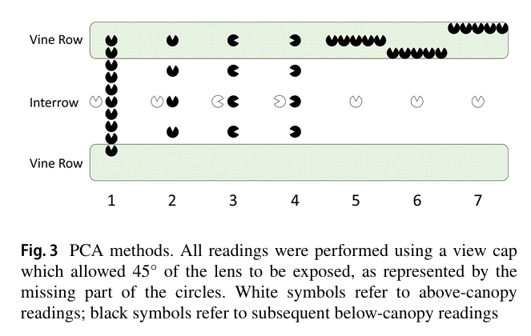
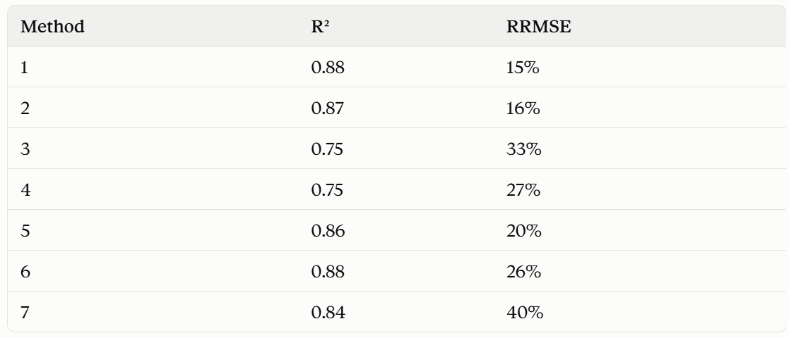

LI-COR plant canopy analyzer: LAI-2200 or LAI-2200C. LAI-2200C is more advanced than LAI-2200. Main advantage of LAI-2200C is its ability to take readings under clear sky and the option to enter scattering correction inputs.
Primary Purpose: Measures Leaf Area Index (LAI)—the ratio of leaf surface area to ground area—which is a crucial biophysical parameter for modeling evapotranspiration, photosynthesis, light interception, and crop growth.
Above & Below Canopy Measurements:
\(A\) Reading: Taken in an open clearing or above the plant canopy to measure total incoming sky diffuse radiation.
\(B\) Reading: Taken below or within the canopy.
The instrument calculates transmittance (\(T = B / A\)) across the 5 view angles to determine how much gap space exists.
View Restrictors: To block out the user operator, neighboring rows, or unwanted sun glare, field-of-view caps (\(45^\circ, 90^\circ, 180^\circ, 270^\circ\)) can be placed over the fisheye lens.
White et al., 2019: Determining a robust indirect measurement of leaf area index in California vineyards for validating remote sensing-based retrievals
Conducted LAI measurement in 4 vineyards with regular basis (but haven't mentioned what's the frequency). 5 transects, and 5 measurements for each transect (5 vine rows, 1 row 1 measurement).
Include above canopy reading and below canopy reading.
Used 315 cap and the 45 window was pointed away from the operator (ensure the operator out-of-view).
Avoid 2-h window around solar noon, measured in the morning.
Measurements were averaged within transects to produce canopy LAI estimate.7 methods are used, show as follows:

Measurement results and accuracy:

在我的實驗中，我將考慮method 2.原因是較少（4次）的測量可以得到與較多（10次）測量類似的結果。使用315 cap. 但由於Bickley的葡萄藤長得較矮，我需要重新考慮transect設計。
Kang et al., 2022 Evaluation of satellite Leaf Area Index in California vineyards for improving water use estimation
這篇文對White et al., 2019的文進行了補充。
LAI measurments were conducted during intensive data collection periods (IOPs). 1 Flowering stage between at April and early May; 2 Berry development satge in early to mid June when vines rapidly grow; 3 Fully developed vine canopy in mid-July to early August; 4 Grape harvest in late SDepeember (USA). IOPs were scheduled to coincide with Landsat overpasses.
Vine LAI was determined by acquiring below canopy readings at approximately 30 cm above the ground (above cover crop).
In 2013-2016, they used parallel configuretion, and found this method underestimate LAI.
In 2016, White et al., 2018 found sensor view direction perpendicular to the vine row has the yield the most consistent results with destructive measurements.結合以上這兩篇文，我將使用PCA sensor view direction perpendicular to the vine row. Landsat每16天revisit一次，推測sample frequency 是16天一次。
Australia wine grape growing cycle:
Winter (June – August) — Dormancy & Pruning
Spring (September – November) — Budburst & Flowering
Summer (December – February) — Canopy Growth & Véraison
Autumn (March – May) — Harvest (Vintage) & Leaf Drop
基於澳洲葡萄的生長季，我將在2027年9月份到2028年2月份期間，每兩周進行一次LAI measurement.
Created by Kwan Yu Chuk using R Markdown in RStudio.